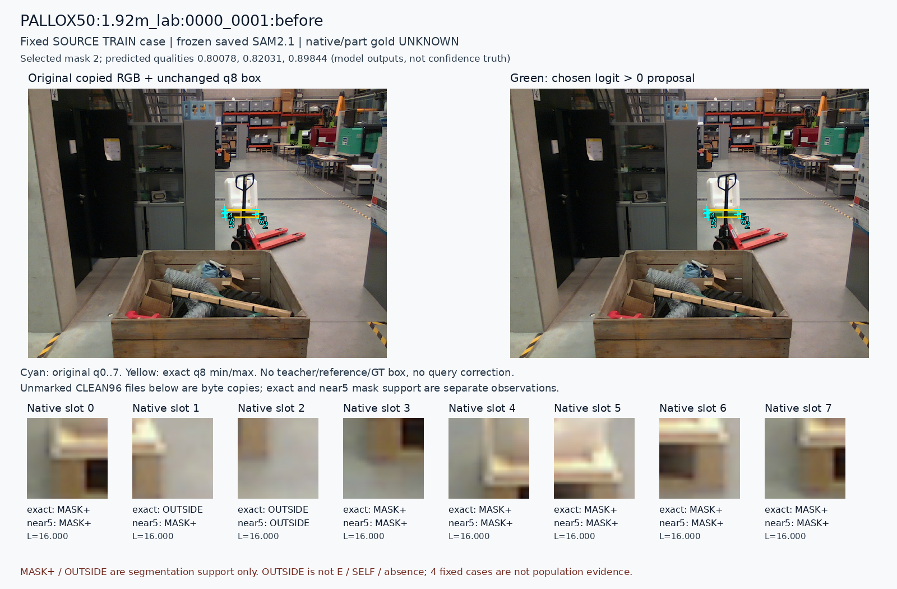
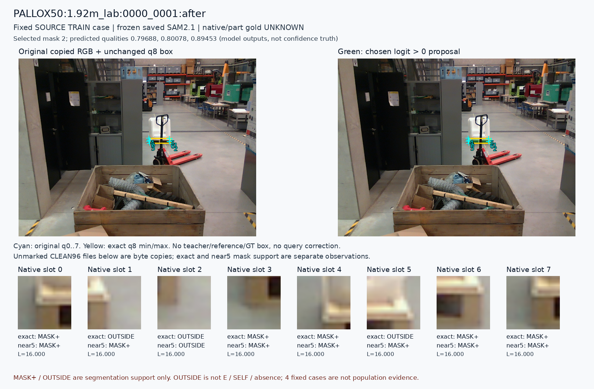
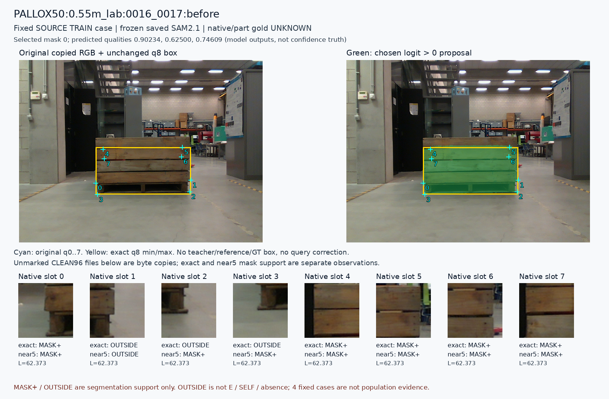
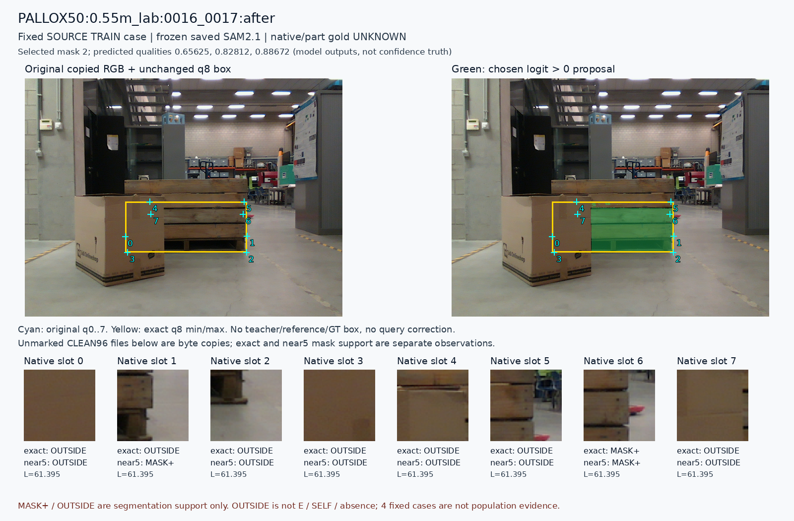

원 q8 min/max box와 원 q/L을 유지한 frozen SAM2.1 저장 출력입니다. 초록은 선택 mask의 logit>0입니다. MASK+·OUTSIDE는 proposal 지원 관측이며 native D/E·SELF·물리 부위 정답이 아닙니다. 모델 quality는 정답 확률이 아닙니다. 원 교사와의 instance 대응을 이 그림이 보증하지 않습니다.
같은 사전 고정 두 쌍·네 프레임·32 query만 사용했습니다. 원인·빈도·통계 일반화나 모델 선택 근거로 쓰지 않습니다. clean96 PNG와 SOURCE PNG는 기존 파일의 바이트 복사이며 표시 마커는 카드에만 있습니다. GT·교사 certificate·reference·모델 가중치는 읽지 않았고 새 inference·학습은 없습니다.
사례 메타데이터 · 32 query 표 · 개요

원 crop 0 원 crop 1 원 crop 2 원 crop 3 원 crop 4 원 crop 5 원 crop 6 원 crop 7

원 crop 0 원 crop 1 원 crop 2 원 crop 3 원 crop 4 원 crop 5 원 crop 6 원 crop 7

원 crop 0 원 crop 1 원 crop 2 원 crop 3 원 crop 4 원 crop 5 원 crop 6 원 crop 7

원 crop 0 원 crop 1 원 crop 2 원 crop 3 원 crop 4 원 crop 5 원 crop 6 원 crop 7
Root의 실제 시각 QA는 별도 기록됩니다.